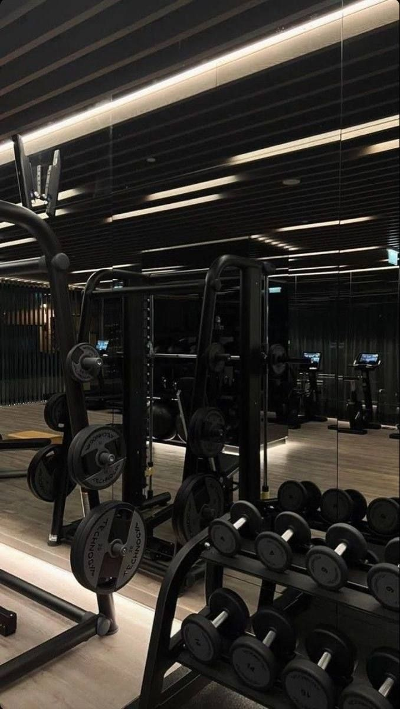
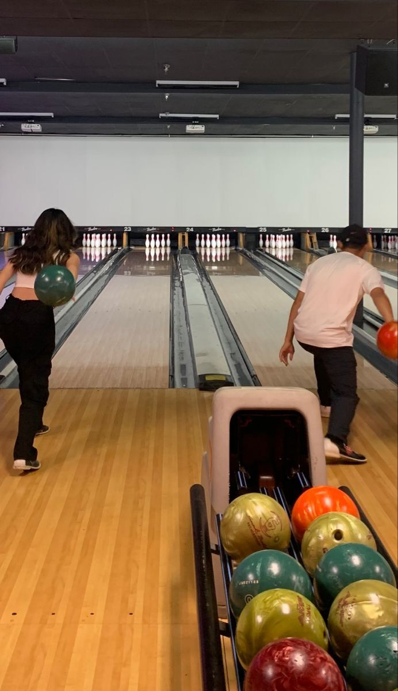
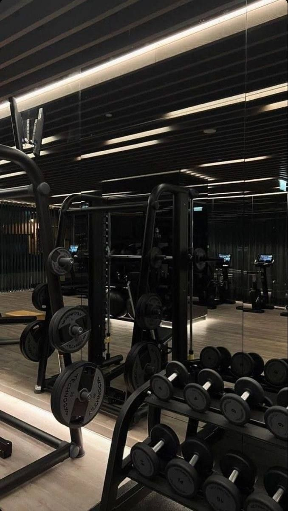
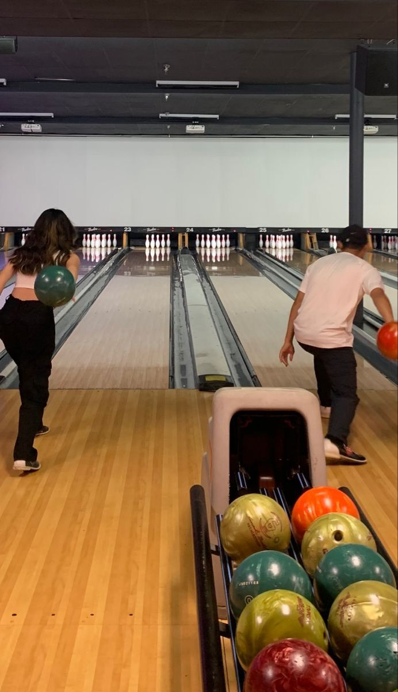

Mijn hobby's
Ik hou er van om te sporten voornamelijk in de sportschool en dansen, ik hou ook van shoppen, met vrienden/vriendinnen afspreken, met me familie iets leuks doen en tekenen.
Soms heb ik ook hobby's voor een paar weken dan doe ik het en dan ben ik er weer klaar mee zo leer ik wel dingen doen en uitvinden wat ik wel en niet leuk vind, zoals knutselen dat vind ik altijd wel leuk om te doen als ik er tijd voor hebt. lezen is alleen leuk als het niet moet en je een leuk boek hebt. films kijken vind ik ook echt super leuk in me vrije tijd wat ik vooral leuk vind is star wars, marvel, hunger games en dat soort films.
 


